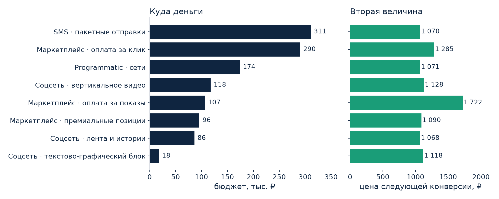
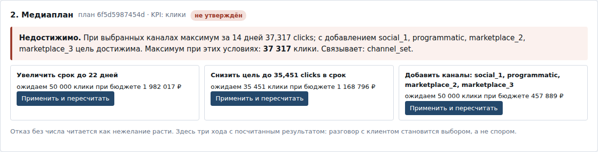
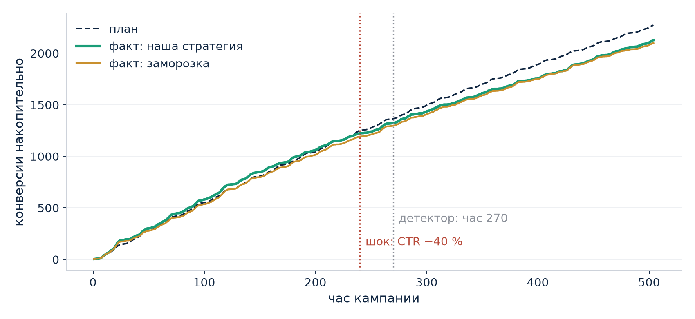
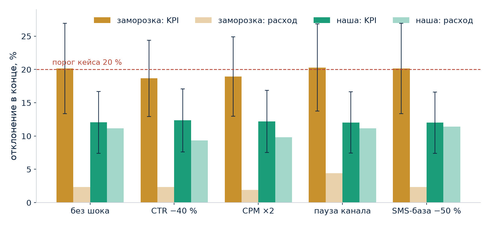
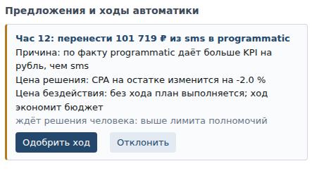

Достижимый медиаплан по восьми каналам и почасовое удержание кампании на его траектории
Бриф → средние CPM, CTR, CR → распределение в Excel → согласование. Около одного рабочего дня, любое изменение брифа — пересчёт заново.
Нечем сравнить каналы между собой и цель с ёмкостью рынка.
Факт сверяется раз в день или реже, бюджет перекладывается вручную, без явной траектории плана. Ещё 0,5–2 часа каждый день кампании.
Нечем сравнить сегодняшнюю цифру с плановой и автоматику с бездействием.
Сервис никогда не показывает число без того, с чем его сравнить.
Граница. brain не импортирует world (import-linter и тест); смена зерна оцениваемого мира план не меняет (test_isolation). Планировщик видит только каталог диапазонов и ретро-историю прошлых кампаний. Шок вводится из интерфейса во время прогона, мозг его не видит.




Побед по KPI в 75–85 % миров. Цена: недорасход около 9 % бюджета в щедрых мирах — он возвращается рекламодателю как резерв, и мы его показываем.

Каналы абстрактные, данные синтетические. Модельные CPM и CTR не являются статистикой какой-либо площадки; это прототип планирования и управления темпом расходования, не система закупок.